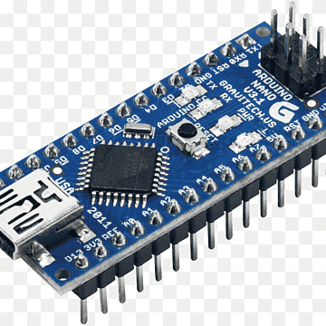
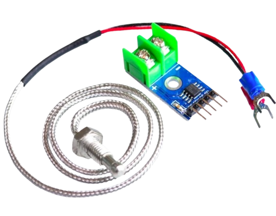
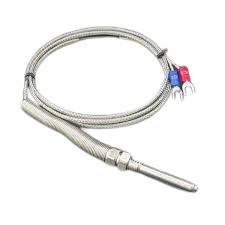
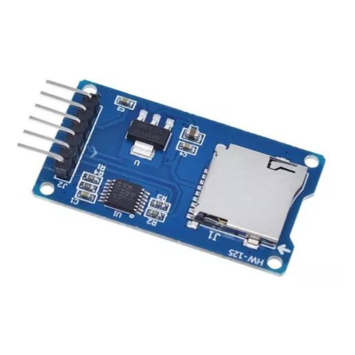
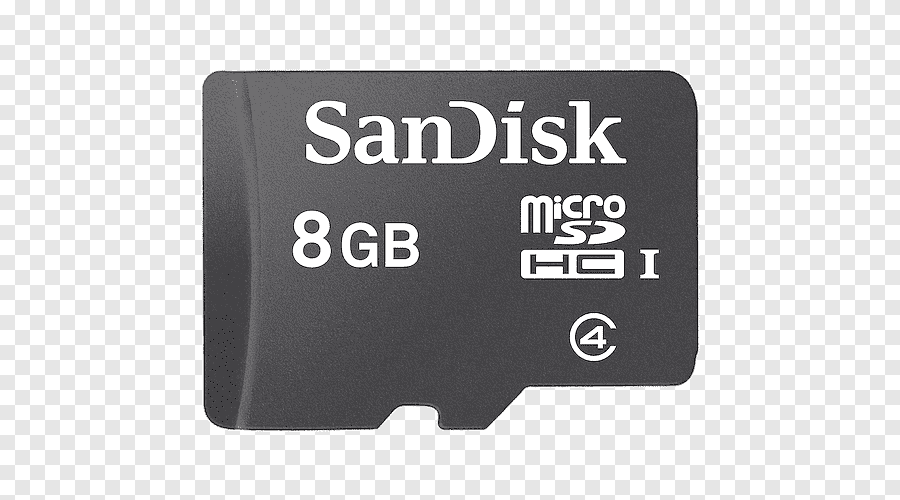
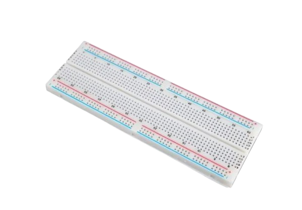

Resumen del sistema
Especificaciones

Microcontrolador basado en el chip ATmega328P. Es el cerebro del sistema: ejecuta el firmware, coordina la comunicación SPI con el sensor MAX6675 y el módulo SD, y gestiona el registro periódico de datos. Su formato compacto lo hace ideal para prototipos.

Circuito integrado especializado que amplifica la señal de microvoltios de la termocupla tipo K y la convierte en un valor digital de 12 bits a través del protocolo SPI. Incluye compensación de junta fría integrada para mayor precisión sin calibración manual.

Sonda de medición industrial fabricada en acero inoxidable. Funciona por el efecto Seebeck: dos metales distintos (Níquel-Cromo y Níquel-Aluminio) generan una diferencia de voltaje proporcional a la temperatura aplicada en su punta. Apta para entornos de alta temperatura.

Módulo que permite al Arduino leer y escribir datos en una tarjeta MicroSD mediante el protocolo SPI. Incluye regulador de voltaje y conversores de nivel lógico integrados para compatibilidad con 5V. Ideal para data loggers ya que guarda los datos de forma persistente sin depender de conexión a PC.

Tarjeta de memoria flash donde se almacena físicamente la base de datos del sistema en formato CSV. Formateada en FAT32 para que la librería SD de Arduino pueda crear y escribir archivos. Cada línea del CSV contiene fecha, hora y temperatura registrada.

Placa de pruebas sin soldadura que permite conectar y reconfigurar los componentes de forma rápida durante la fase de prototipado. Sus filas y columnas de contactos están eléctricamente conectadas internamente, facilitando el tendido del cableado entre el Arduino, el módulo MAX6675 y el lector SD.